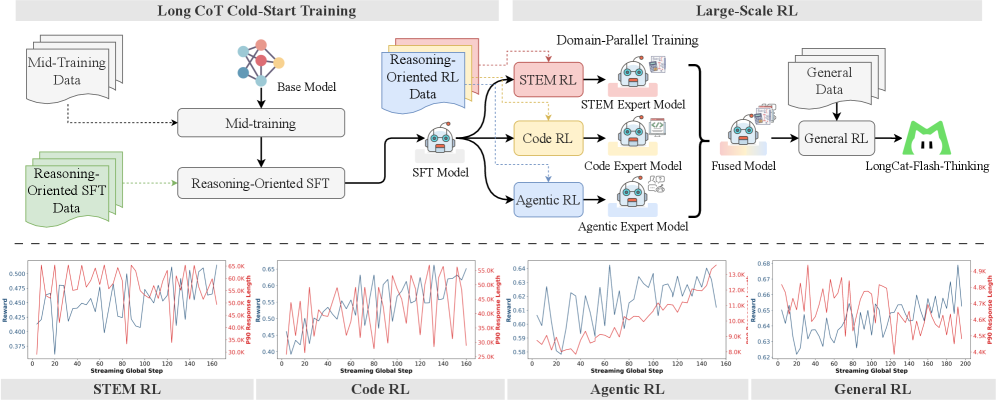
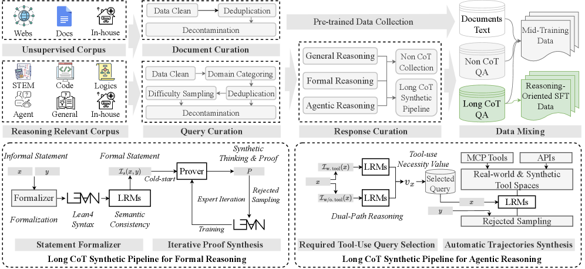
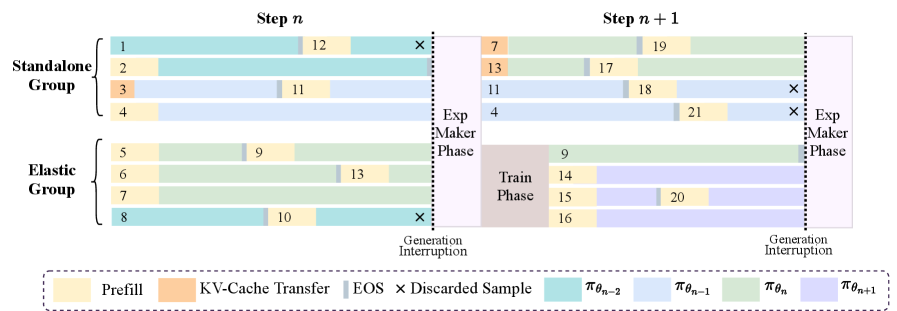

一篇关于如何训练推理能力的工程报告：从长思维链冷启动，到工业级异步强化学习，再到「分领域并行训练 + 专家融合」的核心配方。
📄 阅读原文 / Source — arXiv:2509.18883LongCat-Flash-Thinking 在已有的 560B MoE 基座（LongCat-Flash-Base）上，用一条「长 CoT 冷启动 → 大规模 RL」流水线把它训成顶尖开源推理模型，擅长数学、代码、逻辑与 Agentic 工具使用。
三个核心创新：① 分领域并行 RL + 专家融合——分别训练 STEM / Code / Agentic 专家，再合并成一个近 Pareto 最优的模型，避开混合训练的负迁移；② DORA 异步 RL 系统——流式异步 rollout + 弹性同机部署，比同步训练快 3 倍以上，可在数万张加速卡上稳定训练；③ 面向工具使用的高效推理——在 AIME-25 上把平均 token 从 19,653 砍到 6,965（省 64.5%）而精度不掉。
结果：在开源模型里取得多项 SOTA，形式化证明（MiniF2F pass@1 67.6%）与 Agentic 推理尤其领先。
从「会答题」到「会思考」，前沿模型的竞争已经转向推理能力本身。
近两年大模型的前沿明显往推理能力偏移：OpenAI o1/o3、Gemini 2.5、DeepSeek-R1、Qwen3、GLM-4.5 都在比谁能在数学、代码、复杂逻辑和 Agentic 任务上想得更深。背后的范式很统一——用大规模强化学习（RL）训练，让模型在推理时主动拉长思维链（Chain-of-Thought），把更多算力花在「想」上。
但要把这套范式做到工业规模、且开源可用，要同时啃下三块硬骨头：
LongCat-Flash-Thinking 的目标，就是用一套数据、环境、算法、基础设施端到端协同设计的方案，把这三块一起解决。
本文的三大贡献，几乎是逐一回应下面三个痛点。点击展开查看每种做法的瓶颈。
通用预训练语料里 STEM / 代码这类推理密集数据本就偏少，而显式的长 CoT 结构（一步步推演、回溯、自检）即便在这些数据里也很罕见。
结果是：哪怕后面再 SFT + RL，模型也容易产出同质化的推理模式，在真正难的题上无法深入反思、拿不到正解，推理边界（pass@k）被卡死。
本文的回应：先加一个mid-training「中期训练」阶段做课程式冷启动，专门拓宽推理边界（详见第 03 节）。
把多个领域的数据混进同一批 RL，由于各领域回答长度与分布差异巨大（论文 Figure 7 显示不同领域的回答长度分布明显不同），相邻训练 batch 之间会出现剧烈的分布漂移，在异步训练里表现为负迁移：学了一个领域反而拖累另一个。
退而求其次的顺序训练（一个领域训完再训下一个）虽能缓解，但效率低、不灵活，且一旦进入后期阶段就很难再回头打磨早期能力。
本文的回应：分领域并行训练 + 专家融合（详见第 03 节核心配方）。
同步训练下，整个 batch 必须等最长的那条输出生成完才能开训。推理 / Agentic 多轮调用让输出长度长尾严重，于是出现「偏斜生成（skewed generation）」——少数超长样本拖垮整批吞吐。
已有的部分 rollout（partial rollout）异步方案把长回答切段、用最新模型逐段续写，但实践中有两个问题：① 被打断样本需要重复 prefill，开销大；② 同一条回答的不同段来自不同策略版本，理论上会损害收敛。
本文的回应：DORA 系统——流式异步 + 多版本一致性 + KV-cache 复用 + 弹性同机部署（详见第 03 节）。
先把「会推理的潜力」打底（冷启动），再用 RL 把潜力放大到极致——而 RL 的核心配方是「分领域并行 + 融合」。
整体训练分两大阶段。第一阶段长 CoT 冷启动（mid-training + SFT）为基座注入扎实的推理底子与形式化、Agentic 等专项技能；第二阶段大规模 RL则把潜力放大，并通过分领域并行训练得到多个领域专家、再融合。下图是全文最重要的一张总览图。

冷启动的目标是把「会深度推理」的底子打好，分两步走：
pass@1～pass@128：AIME-24 的 pass@1 提升 27.7%、BeyondAIME 9.3%、LiveCodeBench 6.5%，且高 k 值提升更大——说明推理边界被真正拓宽了。这三类 SFT 数据的合成尤其讲究——下图是冷启动的数据策展全景，其中左下、右下两个子流程是两个亮点。

大多数 LLM 几乎不会写形式化证明。本文用「自动形式化 + Lean4 验证 + 专家迭代」造出大量(命题, 思考过程, 已验证证明)三元组，把这种稀缺能力系统性地灌进模型——这也是它在 MiniF2F 上大幅领先的根源。
RL 是把推理能力放大的关键，但出了名的不稳定、对超参敏感、系统开销大。本文从三个层面同时下手：
DORA（Dynamic ORchestration for Asynchronous rollout）的核心思路：用流式 rollout + 保留 Actor 的多个旧版本来消化长尾生成，同时让 RL 的各种角色弹性同机部署，把设备空转压到接近零。集群被切成两组：专职生成的 Standalone Generator Group，以及可在生成 / 训练角色间动态切换的 Elastic Role Group。

配合 DORA，工程上还有两个放大器：把控制面的 TCPStore 通信复杂度从 O(N²) 降到 O(N) 的大规模流式 RPC；以及用图级编译减少 kernel 分发、带来 1.5× rollout 提速的大规模 MoE 并行。整套系统让 RL 投入达到约预训练算力的 20%仍然可行。
异步训练会带来分布漂移，主要来自两处：推理引擎与训练引擎的数值差异（如 vLLM 的 kernel fusion 不保证逐位一致），以及策略陈旧（staleness）（样本来自多个旧版本策略）。本文在 GRPO 基础上做了四处关键修改：
ε_neg_low / ε_neg_high 限幅、对正优势用 ε_pos_high 限幅——尤其在稀疏 MoE 里防止 importance ratio 爆炸导致崩溃。此外还有带放回的在线过滤（剔除全对/全错样本，保留有梯度信号的难样本）、陈旧度控制 + 回放缓冲、不完整信号掩码（屏蔽沙箱报错、超长截断等坏信号）等效率与稳定性技巧。
a²−b² 与 (a+b)(a−b) 这类等价表达。其判定准确率 98.8%，远高于规则奖励的 80.9% 和无推理 GenRM 的 94.0%。这是全文真正的「招牌动作」。RL 训练按三步走，点击下面的标签或「下一步」逐阶段查看每一步在做什么、为什么这么做。
从同一个 SFT 模型出发，并行训练三个领域专家，且每个领域用最适配自己的配置：
<longcat_think> / <longcat_tool_call> 结构化模板 + 工具调用格式奖励，保证多轮轨迹可解析。为什么这么做：各领域回答长度/分布差异太大，混在一起会负迁移；并行 + 定制配置既高效又互不干扰。
把三个专家的参数合并成一个模型，难点是化解专家之间的参数干扰。本文用三招组合：
τ_i = θ_RL_i − θ_SFT 做幅度归一，平衡各方贡献。为什么这么做：已有研究表明，合并领域模型能得到整体更强的单一模型；这一步让模型在数学、代码、Agentic 上同时接近 Pareto 最优，而不是顾此失彼。
最后一轮通用 RL，目标是提升广义场景能力并防止融合后核心能力回退：
为什么这么做：融合可能让通用 / 安全等能力略有漂移，通用 RL 把整体能力「捏合」到位，得到最终交付模型。
在 Agentic 设置下，模型可以把部分推理步骤外包给外部工具而不是死磕纯文本长推理。结果在 AIME-25 上平均 token 从 19,653 降到 6,965（省 64.5%），而精度几乎不变——说明「靠工具高效推理」可以逼近「靠超长 CoT 暴力推理」的效果。
和 DeepSeek-V3.1-Thinking、Qwen3-235B-Thinking、GLM-4.5 等开源模型，以及 o3 / Gemini 2.5 Pro / GPT-5-Thinking 等闭源模型对比，用更少激活参数取得有竞争力的成绩。
用一句话概括：LongCat-Flash-Thinking 以 27B 平均激活参数，在数学、代码、逻辑、Agentic 工具使用、形式化证明、安全等维度全面达到开源 SOTA，并在多项指标上与顶级闭源模型掰手腕——尤其形式化证明与 Agentic 推理是它相对开源同行的明显优势。
| Benchmark | DeepSeek-V3.1-T | Qwen3-235B-T | GLM-4.5 | OpenAI-o3 | Gemini2.5-Pro | GPT-5-T | LongCat-F-T |
|---|---|---|---|---|---|---|---|
| 规模（总参数 / 平均激活参数） | |||||||
| # Total Params | 671B | 235B | 355B | — | — | — | 560B |
| # Activated | 37B | 22B | 32B | — | — | — | 27B |
| 数学推理 | |||||||
| MATH-500 | 98.8 | 99.6 | 95.4 | 98.4 | 98.0 | 99.2 | 99.2 |
| AIME-24 (Mean@32) | 93.9 | 93.9 | 89.3 | 91.6† | 90.7 | 92.0 | 93.3 |
| AIME-25 (Mean@32) | 87.9 | 92.5 | 85.5 | 88.9† | 89.2 | 94.6† | 90.6 |
| HMMT-25 (Mean@32) | 80.4 | 83.8 | 76.3 | 71.9 | 79.3 | 84.8 | 83.7 |
| 通用 / 逻辑推理 | |||||||
| GPQA-Diamond (Mean@16) | 84.2 | 80.4 | 78.3 | 81.9 | 84.0 | 84.4 | 81.5 |
| ARC-AGI (Mean@1) | 37.5 | 45.3 | 21.4 | 47.3 | 46.8 | 59.0 | 50.3 |
| ZebraLogic (Mean@1) | 96.1 | 97.5 | 90.9 | 94.3 | 92.4 | 92.7 | 95.5 |
| 代码 | |||||||
| LCB 24.08–25.05 (Mean@4) | 73.5 | 75.4 | 61.1 | 76.2 | 74.2 | 80.6 | 79.4 |
| OJBench (Mean@1) | 33.6 | 32.1 | 19.0 | 38.4 | 41.6 | 34.1 | 40.7 |
| Agentic 工具使用 | |||||||
| τ²-Bench-Airline (Mean@4) | 44.0 | 58.0 | 66.0 | 62.5 | 58.0 | 62.6† | 67.5 |
| τ²-Bench-Telecom (Mean@4) | 23.7 | 47.3 | 56.1 | 67.5 | 38.3 | 96.7† | 83.1 |
| BFCL V3 (full) | 55.4 | 75.7 | 79.1 | 72.4† | 63.2 | 60.1 | 74.4 |
| 形式化证明 | |||||||
| MiniF2F-Test (pass@1) | 49.6 | 11.9 | 10.9 | 15.2 | 13.9 | 21.4 | 67.6 |
| MiniF2F-Test (pass@32) | 79.5 | 26.6 | 27.0 | 37.7 | 41.8 | 51.2 | 81.6 |
| 安全 | |||||||
| Harmful | 79.2 | 84.3 | 70.4 | 64.8 | 44.3 | 56.8 | 93.7 |
| Criminal | 89.7 | 92.7 | 88.8 | 85.7 | 77.4 | 87.3 | 97.1 |
注：数字均取自原文 Table 2；列名缩写 T = Thinking。同列对比仅供参考，部分闭源模型分数为外部报告（†），评测配置见原文。
LongCat-Flash-Thinking 的价值不只在分数，而在于它把「训练推理能力」拆成了数据合成、RL 算法、奖励系统、训练基础设施四个可以分别攻克、又端到端协同的工程模块，并给出了一套「分领域并行 + 专家融合 + 异步 RL」的可复制配方。对想做大规模推理 RL 的团队，DORA 的异步设计与领域并行的思路尤其值得借鉴。